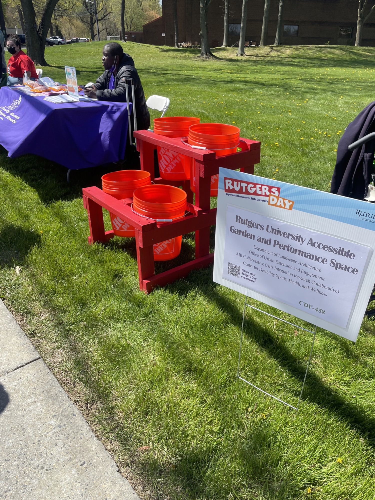
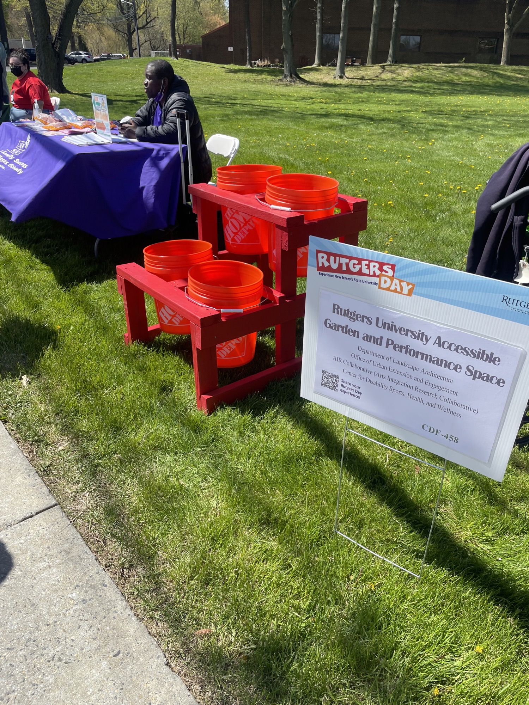
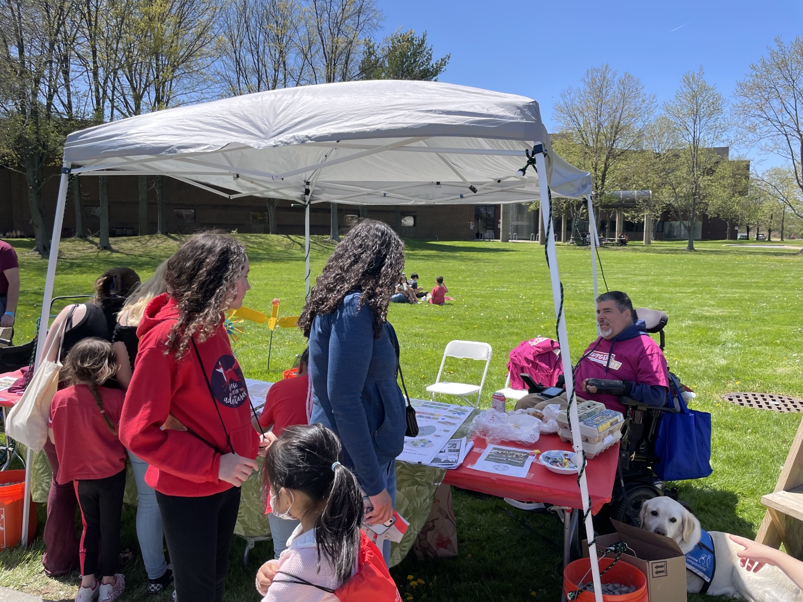
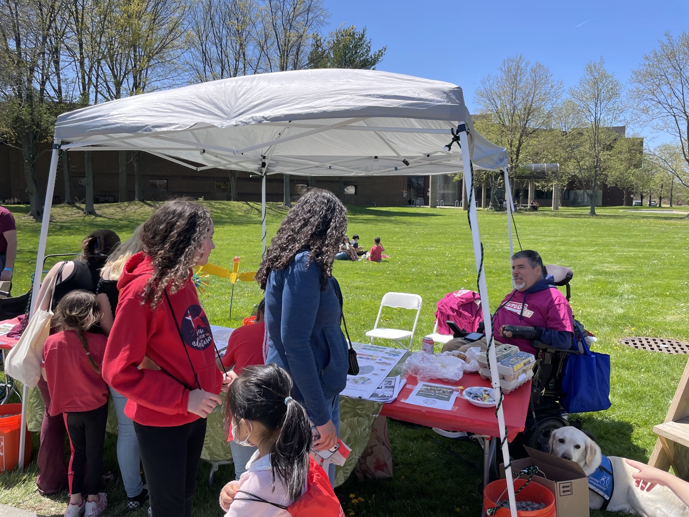

Space Activation
Since 2021, the AIR Collaborative has been working with Dr. Javier Robles (SAS) and Richard Alomar and Meredith Taylor (SEBS) to realize a prototype of an Universally Accessible Garden on Cook Campus. This garden shall become part of the SEBS Living Labs. The aim is to foster spatial justice for people with disabilities (PWD). For over 40 years, the Cook Organic Garden (COG) at Rutgers has provided faculty, staff, students, alumni, and members of surrounding communities with opportunities to garden in over 86,000 square feet of cultivated space on the New Brunswick campus.
Historically, none of the space has been designated or designed specifically as universally accessible for people with disabilities (PWD). The establishment of a prototype Universally Accessible Garden serves as a space to afford PWD health and social benefits and as a site for socioenvironmental research. The UA Gardens project involves inter-departmental and cross-school collaboration while providing students with experience-based education and interdisciplinary networking opportunities.The CO-PIs of the UA Gardens will address exclusion through transformative planning and design to eliminate barriers to participation for PWD and foreground the right of all individuals to thrive and connect in public green spaces. The UA Gardens will complement a number of disability and wellness programs that the Center for Disability Sports, Health, and Wellness developed by its Director and CO-PI, Dr. Javier Robles.
Objective
Two steps construction of a prototype of a garden for all abilities. Designs for Site One of the UA Gardens shall include installation of accessible pathways and the purchase of lumber to build ADA-compliant raised beds and specialized adaptive equipment designed for PWD. As the pilot project, Site One will inform the plans for Site Two, a second, larger, and more comprehensive UA Garden, to be developed in 2023-2024. The CO-PIs have identified the land for both sites in collaboration with the Office of Urban Extension and Engagement.
Collaborators
Co-P.I.s: Dr. Anette Freytag, Dr. Javier Robles, Meredith Taylor, Jackie Thaw (former PI: Dr. Julia Ritter) • Student designs under the guidance of Richard Alomar • Chair of the Department of Landscape Architecture at Rutgers
Sponsors
Impact:
The findings of this project shall inform best practices for integrating PWD into thecommunity and foster a sense of belonging and autonomy for participants. By creating an accessible garden at Rutgers, we will assess the benefits of universal design and how reasonable modifications transform gardening into an activity for everyone regardless of age and ability. We expect this project will increase students' comfort and confidence while working with PWD and boost skills and competency prior to their entrance into the workforce. The project shall strenghten the Disability Community at Rutgers.
 


 
